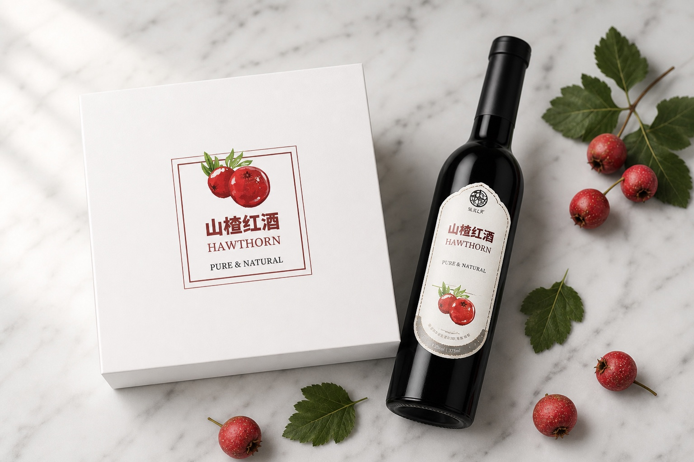
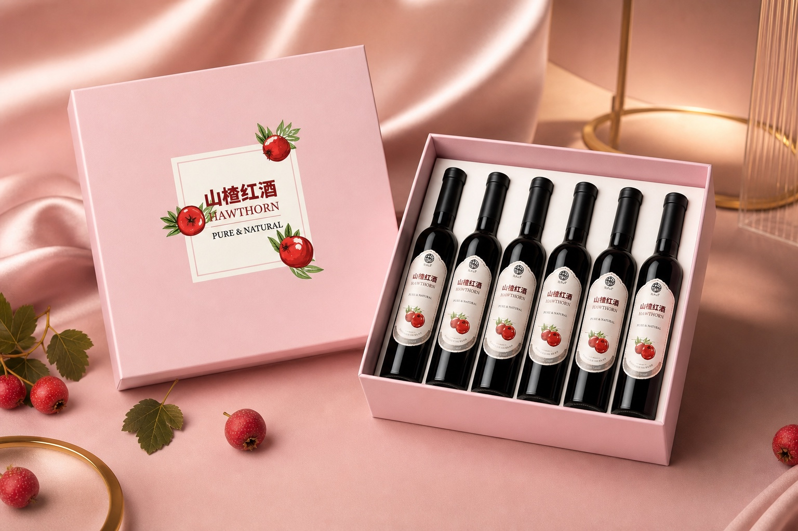
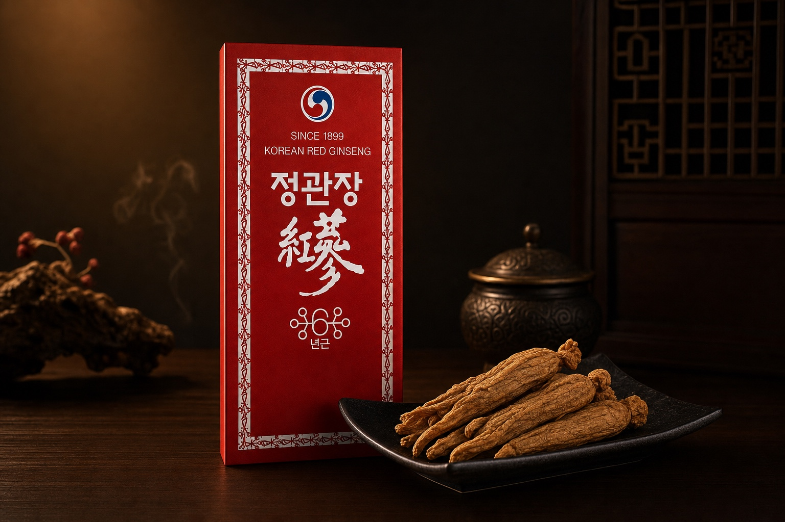
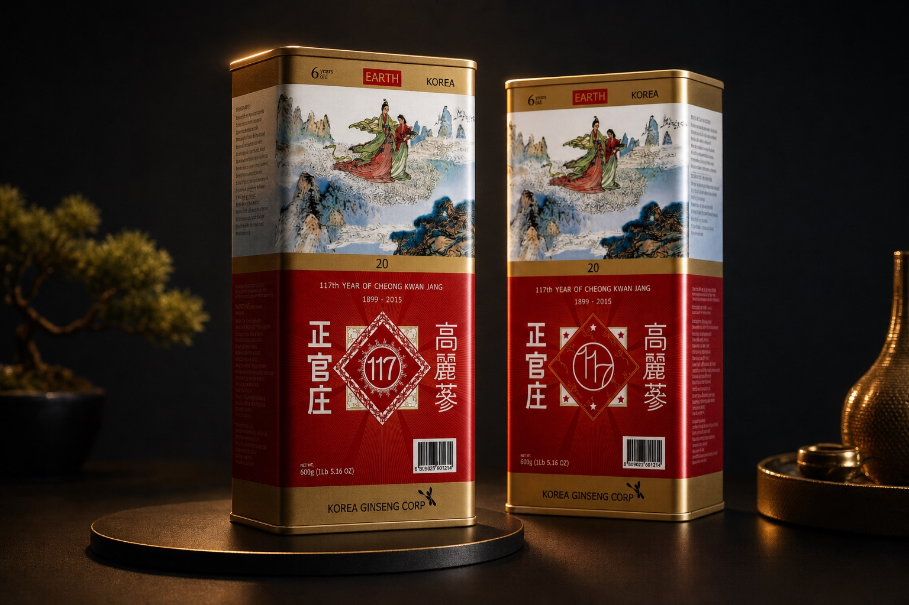

山楂红酒 · 礼盒包装
系列礼盒与酒瓶标贴；白盒与粉色礼盒两条产品线。


- 职责
- 刀版、材质提案、印厂跟色与完稿。
- 范围
- 系列包装、礼盒结构、说明书信息层级。
- 结果
- 减少印厂返工，缩短上机周期。
正官庄红参 · 系列包装
红参礼盒与铁罐装；传统视觉与现代印艺结合，获 2015 正官庄国际设计比赛入围奖。


- 职责
- 包装结构、标签与罐体画面、专色与金属工艺提案。
- 范围
- 礼盒、马口铁罐、展开图与场景摄影指导。
- 结果
- 获 2015 正官庄国际设计比赛入围奖；统一系列识别，支撑渠道陈列与礼赠场景。
可加入刀版示意图、实物摄影、或材料色卡说明（注意客户保密协议）。